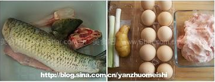
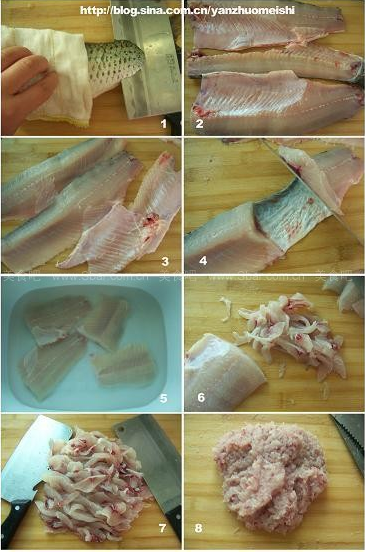
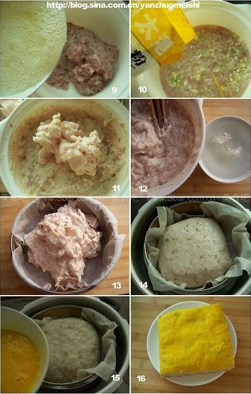
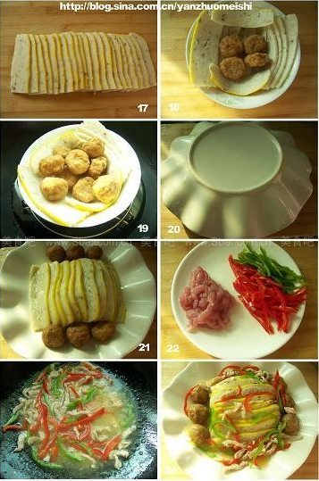

荆州鱼糕
Contents
转载至http://blog.sina.com.cn/s/blog_60d3a9d90100gtrf.html
相传，战国时期，楚都纪南城内有一酒店专门经营各种淡水鲜鱼。有一年夏天，店主买多了，便急中生智，把鱼刺鱼皮全部剔除，将鱼肉剁成茸，掺进鸡蛋，加了豆粉，又倒了酒拌匀，倒进蒸笼内抺平、蒸熟。恰巧楚庄王打猎归来，路过此地闻其异香，便买了一些带回宫，一尝，连赞好吃，尔后鱼糕便在当地流传开来。因此菜源于楚都，后人亦称之为“楚糕”。
鱼糕，又名百合糕，俗称荆州花糕，“头子”菜．作为荆州的八大名肴其历史源远流长，相传为舜帝妃子女英所创。传说舜帝携女英、娥皇二妃南巡柴桑（湘地），经过荆州时，因路途劳累，娥皇染疾不思茶饭，唯欲吃鱼而厌其刺，于是善良的女英结合当地一渔民的指导，融入自己的厨艺，蒸成鱼肉糕，娥皇吃后，病情迅速好转，舜帝知情后对鱼肉糕大加赞赏。鱼肉糕因此在荆楚一带广为流传，春秋战国时开始成为楚宫庭头道菜，直到清朝，仍是一道宫廷菜，据说乾隆尝过荆州花糕后脱口而咏：食鱼不见鱼，可人百合糕。百合糕因此而得名。
“鱼糕”是湖北荆州的传统菜，千百年来一直是这里盛宴上的一道大菜，以吃鱼不见鱼、鱼含肉味、肉有鱼香、鱼糕晶莹洁白，软嫩鲜香，有韧性，对折不断而著称，人们宴请已形成“无糕不成席”的传统。
鱼糕好吃但不好做，工序较多，而且耗时耗力。在老家一般是男人做这个菜，需要力气来搅拌，这里的搅拌，在老家也叫“打上劲”，所以很多把做鱼糕也叫“打糕”，而会做这糕的人，也叫“打糕师傅”。
荆州鱼糕
【原料】草鱼1条(约3000克)，猪肥膘肉500克,姜水1000克，葱白末20克，鸡蛋10个
【调料】精盐50克，鸡精5克，绿豆淀粉250克，胡椒粉5克。
【做法】
材料准备：

图１：草鱼去头清洗处理干净
图２：将鸡蛋清和蛋黄分开装在两个碗内，葱白切末、姜切末后加水调成姜水
鱼的处理：

图１：剖鱼：在鱼尾下刀，把鱼身剖开，可用布放在鱼身上防滑
图２：去脊骨：把鱼身分开成两半后，另一半也从鱼尾部下刀，剔下鱼脊骨
图３：去胸刺：按住鱼胸骨刺的地方，刀紧贴鱼肉将鱼胸骨刺剔下
图４：去鱼皮：可从鱼尾，也可从鱼身中间切一刀深至鱼皮不断，一手按紧一边鱼身，一手将刀紧贴鱼皮把另一边鱼肉推下来，然后拉紧去过肉的皮，将剩下的鱼肉用同样的方法推下来
图５：漂水：去除过鱼皮的鱼肉，剔下红色肉部分，放入清水中漂洗下血水
图６：切片：将漂洗过的鱼肉切成片
图７：准备两把刀，将切好的鱼片，用排刀法剁成鱼茸
图８：鱼茸：鱼茸要剁的均匀细腻，用手指把鱼茸在案板上按下，感觉没有颗粒硬粒后即可
鱼糕坯的制作：

图9：将分好的蛋清打散，倒入剁好的鱼茸中，搅拌均匀，并分数次加入姜水顺一个方向搅拌
图10:搅拌均匀成糊状后，加入葱白末、淀粉、鸡精、白胡椒粉继续顺一个方向搅拌
图11:待鱼茸粘稠时，将猪肥肉倒入鱼茸中，加入盐，再搅拌上劲
图12:准备一碗清水，放点鱼茸在碗中，并能漂起浮在水面上时，鱼茸就算是搅拌好了
图13：取一蒸笼，一块干净温纱布铺在蒸笼里，将鱼茸倒在蒸笼里
图14：可用水沾在刀面上，抹平鱼茸，整形
图15：蒸锅倒入水开大火，放入修整好形的鱼茸蒸笼，盖上锅盖，蒸三十分钟
图16:蒸好后，揭开锅盖，用干净的湿布沾干表面上的水气，再用刷子沾上蛋黄液刷在糕面上，蒸三分钟后，再刷一次蛋黄液，蒸三分钟即可。蒸好的鱼糕晾凉，可随食随切
鱼糕菜并无定式，有直接蒸好，切片装盘即可，也可以随意再做出很多鱼糕菜，比如：
1、做些“冒子”浇在上面，最简单的有用简单调料勾芡淋在上面，吃起来更滑嫩。
2、最常见的是，用黑木耳，黄花菜，肉丝，辣椒丝等加调料，用湿淀粉勾芡淋在鱼糕片上。
3、有在喜宴上用海参、鹌鹑蛋，鱿鱼卷，鱼丸，玉兰片等加上鱼糕一起烩炒，勾芡，制成“全家福”。
不过怎么吃完全在于你自己，我觉得鱼糕蒸好后，直接用手拿着已很好吃喽！
我做了道简单的鱼糕菜，也是最家常的做法：

图17:将鱼糕切成同样大小的片状
图18:取一碗，将切好片的鱼糕码放在碗中，可用丸子垫底（我用的是炸藕丸）
图19:将做好型的碗放在锅中蒸十分钟即可
图20:将盘子倒扣在蒸好的鱼糕碗上
图21:按紧碗和盘，迅速翻过来，并摆好盘
图22:将青红椒切丝，猪里脊肉切丝，加入盐、料酒、白胡椒粉、淀粉搅拌匀
图23:锅中烧热，倒油，倒入肉丝翻炒一分钟后放入青红椒丝，加入少许盐调料，淋入水淀粉勾芡
图24:将烧好的肉丝汤汁淋在鱼糕上即可
【心得】
1、鱼肉要选取白肉，将鱼红肉剔下，以免影响美观。
2、搅拌时一定要按照一个方向搅拌上劲，以免肉不上劲，松散
3、只能加入蛋清，加入蛋清搅拌后，会和不同的原料粘结起来，做出来的鱼糕更加滑嫩细腻、富有弹性
4、在剁鱼茸和猪肥肉以及搅拌时要有耐心，肉要剁成茸状，这样做出来的鱼糕看不到肉粒，口感细腻
Author nanshusu
LastMod 2021-08-26